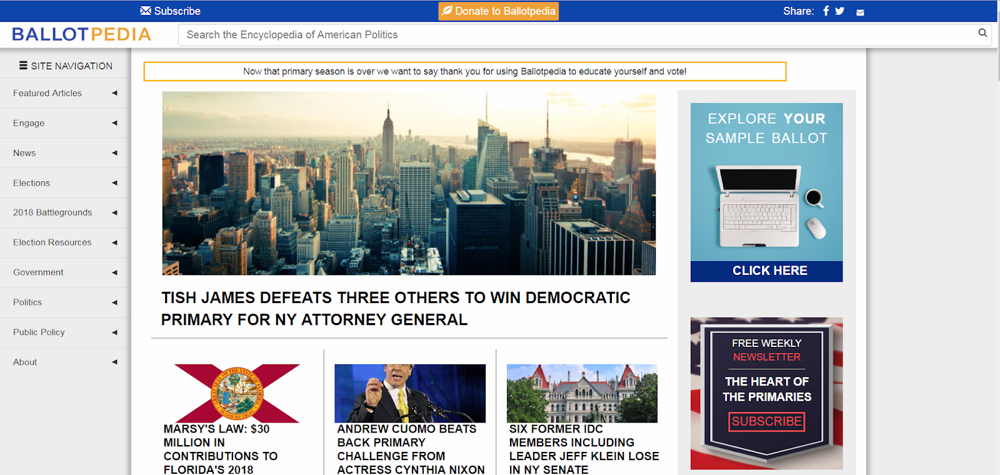
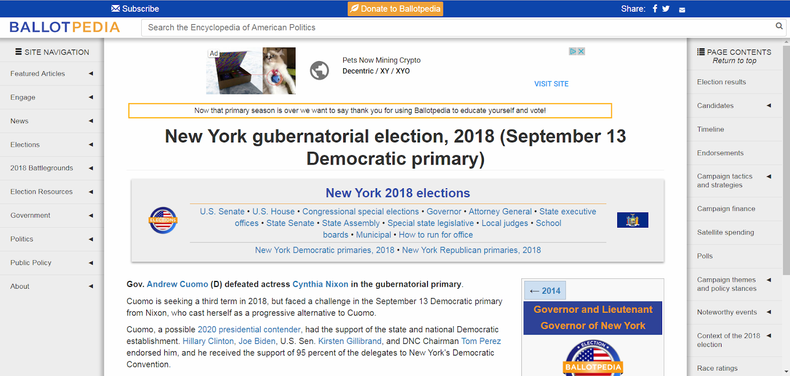
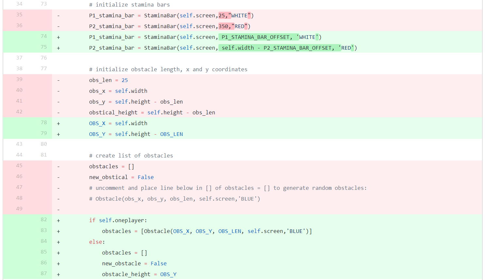
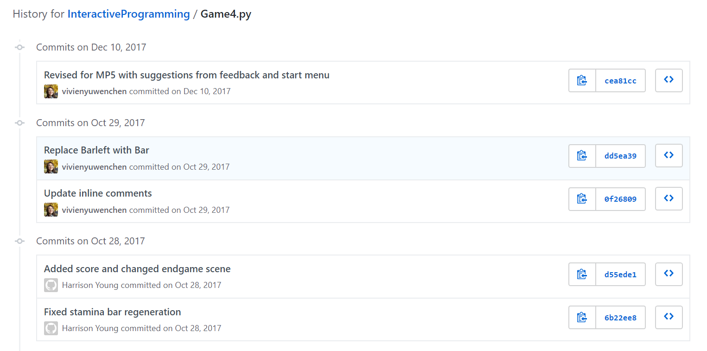
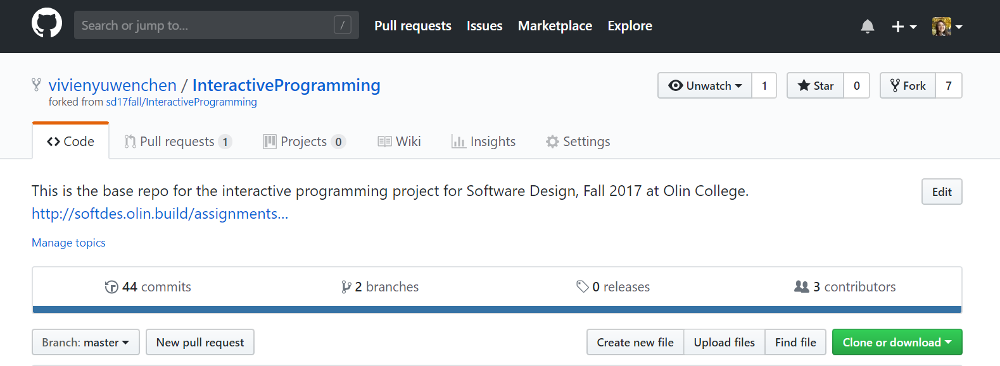

Design Development
What is your design?
Our design is a mobile application curates a newsfeed that compiles and displays relevant news according to the user’s interests, location, and preferred news sources.
How does it work?
When the user opens the app, they will be asked to enter a location of their choice. This location is intended to either be their current location or the address that they vote from which allows the app to identify relevant voting districts and area-specific news.
With that location entered, the app will transition to the next screen, where they will select and add the topics that they are interested in seeing news about including animal rights, immigration, marijuana legalization, schools, taxes, etc.
Once the user is satisfied with their tags (selected topics of interest), the app will take them to a screen that allows them to choose the sources that they want to see information from in their feed. This can include different social media outlets, which will be restricted to interest groups that relate to their selected tags (if they are interested in animal rights and want to see information from Twitter, they will get tweets from the MSPCA), as well as more standard news sources (the local newspaper based on initial location input), and primary sources (the local government’s website).
 Once the location, tags, and sources have been selected, the app will display a newsfeed that show the title, a brief description, and the tags related to relevant articles/posts/pages (we’ll call the items from now on) based on the selected location, topics and news sources. If an item is a tweet or another short post from social media, the feed will display the post.
On the feed screen, if the user sees an item description that they are interested in, they can select it and it will take them to a screen that contains more information about that item. If the item is a piece of social media, the screen will display that item, an explanation of the events or topics related to that tweet, and definitions to words that might be confusing. If the item is a news article or primary source article it will include the full news article translated into understandable language and a link to the page (new source or primary source) along with it. The user will be able to navigate back to the feed from the detailed page as well.
All items in the feed will delete themselves after one week unless saved. For each item in the feed, the user may swipe the piece left or right. The left-swiping (from right to left) motion will overlay the item with two box options: remove item or remove author. The right-swiping motion (left to right) will add the item to a “saved” area that can be accessed from the Settings area, these items will not be deleted.
The user may navigate to the settings screen (denoted by the gear icon and pictures right) to edit their location, tags, and sources, as well as change their preferences for sorting. The “saved” area is also accessible from this screen (not shown in the picture)
How well does it meet user needs? In what ways does it fall short?
The application meets the user’s needs by lowering the barriers to entry to civic awareness. It displays credible information that is relevant to the user, giving them the autonomy to choose their topics of interest and their trusted sources. It contains many of the desirable features of social media, such as being up-to-date with the latest local news and providing a starting point for further investigation through the tagging system, which we had found were the original reasons for many college students relying on social media to stay informed. The user’s topics of interest are aggregated into one location, making. The information is also understandable; while the articles, posts, etc. are taken directly from the original source, there is a section that condenses the information and defines the specialized language used.
The application falls short in that it does not explicitly promote civic engagement. We did not incorporate features that allow users to take immediate action through our app. However, by lowering the barriers to entry to civic awareness, the app exposes the user to a large quantity of viewpoints and articles, posts, etc., some of which may include calls to action. Another shortcoming is that it does not currently support a space for user-to-user interaction, which may help to increase the diversity of viewpoints and opinions and promote engagement.
What important alternative designs did you consider, either initially or during the refinement of this idea? Why did you reject them/prefer the one you chose? What key insights did you gain in trying to produce a design that addresses your brief?
We had initially planned to design our app to explicitly target civic engagement on top of tackling civic awareness, but we realized through our refinement process that civic awareness was the greater problem--the underlying problem. In reflecting on the information we gathered from our prospective users, we decided that it was more important to first and foremost increase civic awareness, as that was the main barrier to entry to civic engagement, while only implicitly promoting engagement through the information aggregated by our app.
Another insight we gained while developing our design was that streamlining our settings would play to our users’ intuition. We originally incorporated a multi-level filter system, in which the user could filter through topics on one page and change their location and sources by going to their respective pages through the settings page. This was to emphasize our topic filtering feature. However, our testers were all confused about which screen to go to when they wanted to edit their sources, location, or even topics. They were especially confused by the name of the button to update sources, which was called “Update Feed” instead of something more relevant like “Update Sources”. We thus decided to put all these filter and editing options under an umbrella settings page, and change the heading for each of the “filter” options to better reflect their function.
Another alternative design we had was to copy the format of the original article, post, etc. directly into our app when users wanted to view it. This, however, turned out to make both the designers and the users uncomfortable, as the articles, posts, etc. had different formatting were nonuniform. We also considered linking directly to the original website or source when users clicked on the blurb tile from the feed, but we decided against it, as we personally dislike apps that redirect you or open an url directly in the app, and our testers agreed. Thus, we decided to have an intermediate article formatted to our app, with a link to the actual web page to encourage fact-checking and sharing of the article. This design had its own problems, as the transition from the intermediate article to the web page was not apparent enough in our paper prototype, which we will aim to fix in the next phase.
Another confusion users had was with the hashtags, in which users weren’t sure belonged to the filter categories or specifically to Twitter, as we had the tags directly under the sources line with no separation. We realized that even such a divide, or lack thereof, can throw users off and are aiming to fix this problem in the next phase.
Some users also mentioned wanting to see well-known news sources like CNN or BBC, which is a good point. We originally just wanted to incorporate local news sources to encourage awareness of at the local level, but CNN, BBC, etc. would likely have relevant news and information as well and there can perhaps be an option to include such sources in the future.
Potential Future Work
If we had more time, we would make paper prototypes that reflect a streamlined filter option. We would also update the settings screen with more tags and options for viewing the newsfeed.